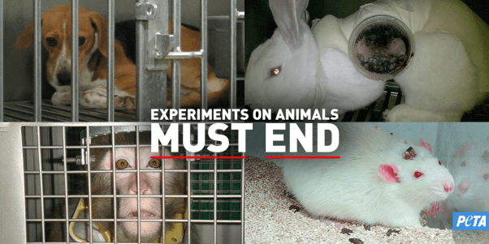
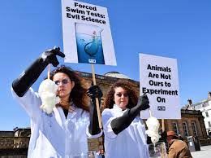

Introduction

Animals do not deserve to be used in experiments. Animal testing is a practice that belongs in the past. It is time to prioritize animal testing alternatives that are safer, faster, and more reliable for humans—without causing animals to suffer.
What are animal experiments?.

An animal test is any scientific experiment or test in which a live animal is forced to undergo something that is likely to cause them pain, suffering, distress, lasting harm and dead.
Animal experiments are not the same as taking your companion animal to the vet. Animals used in laboratories are deliberately harmed, not for their own good, and are usually killed at the end of the experiment.
Which animals are used in experiments?

Animals used in experiments include baboons, cats, chimpanzees, cows, dogs, ferrets, fish, frogs, guinea pigs, hamsters, horses, llamas, mice, monkeys (such as marmosets and macaques), owls, pigs, quail, rabbits, rats and sheep.
Types of Animals experiments

There is no limit to the extent of pain and suffering that can be inflicted on animals during experiments. In some instances, animals are not given any kind of pain medication to help relieve their suffering or distress during or after the experiment on the basis that it could affect the experiment.
These tests include:
-
Draize Test:
A substance is placed in one eye of a rabbit, with the other eye serving as a control. The rabbits are restrained, preventing them from responding naturally to the irritation, and their eyes are evaluated at regular intervals up to 14 days. -
Skin Irritation Testing:
It assess the potential of a substance to cause damage to the skin, including itching, swelling, and inflammation. The test most often uses rabbits and involves placing a chemical on a shaved patch of skin and using another shaved patch as a control. -
Ecotoxicity Testing:
Ecotoxicity tests are used to analyze potential negative effects of chemicals entering the environment, exprimenting with fish. -
Carcinogencity Tests:
In this test, a chemical is administered orally, placed on the skin, or inhaled over a prolonged duration to mice or rats. After the study is completed, the animals are killed and their tissues and organs are examined for evidence of cancer. -
Absent mothers:
Monkeys are taken from their mothers as infants to study how extreme stress might affect human behavior. -
Human limb movement test:
Cats have their spinal cords damaged and are forced to run on treadmills to study how nerve activity might affect human limb movement -
Organ function test:
Dogs have their hearts, lungs or kidneys deliberately damaged or removed to study how experimental substances might affect human organ function.
“Animals have hearts that feel, eyes that see, and families to care of, just like you and me.”
Life in Laboratories

Animals in laboratories typically also have to watch (or hear) other animals suffering, including their own parents, siblings or babies. High levels of constant stress can cause animals to exhibit unnatural behaviors. For example, it is not uncommon for monkeys to mutilate themselves or to rock or vocalize constantly as a way to help relieve their anxiety, mice to overgroom each other until they are completely bald, and dogs to continually pace.
Watch an uncomfortable video of 60 seconds to prevent a condemned life to them.
How can we stop that?

Every day, you hold a vote that dictates the future of science and compassion. Refuse to continue the suffering. Educate yourself and those around you. Sign petitions that ban this and support organizations dedicated to replacing animals with advanced human-relevant testing methods.
The most constant and powerful action is simple: Choose Cruelty-Free Products.
“We can judge the heart of a man by his treatment of animals”
Cruelty Free

This term is typically used for cosmetics as part of an effort to cater to those who are trying to be more conscious about animal treatment.
Cruelty Free means that no harm is done to animals in any stage of the development of the cosmetic product or its components.
Cruelty-free skincare brands do not test on animals, so you can be sure that their products have not caused any animal suffering.
As well as its ethical nature, cruelty-free is backed by science as an effective form of skincare. This products do not contain any ingredients that have been tested on animals, and they are also often made without any animal by-products. They are usually vegan and organic, ensuring they are not contributing to animal cruelty.
Cruelty Free Brands

PETA
PETA (People for the Ethical Treatment of Animals) is a global animal rights organization that opposes the use of animals for human benefit in areas like laboratories, food, clothing, and entertainment.
PETA's Ultimate Cruelty-Free List is the only international program that doesn't allow animal tests for any reason anywhere in the world. It includes companies and brands that have verified that they and their ingredient suppliers don't conduct, commission, pay for, or allow any tests on animals for ingredients, formulations, or finished products anywhere in the world and won't do so in the future.
How to identify these products?
To identify a cruelty-free product, look for established certification logos on the packaging, such as the Leaping Bunny or PETA (Beauty Without Bunnies).

Or check PETA's Ultimate Cruelty-Free List.
Some cruelty free brands are:

And this brands DO test on animals: